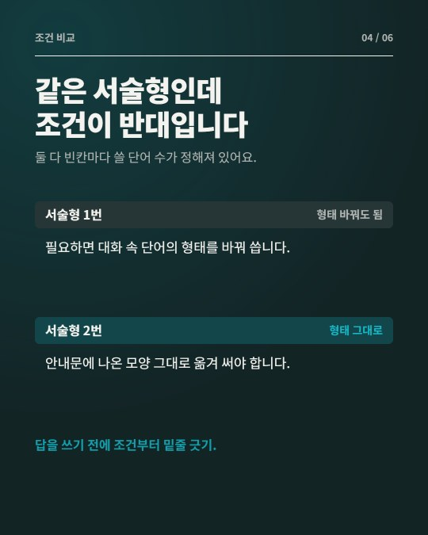
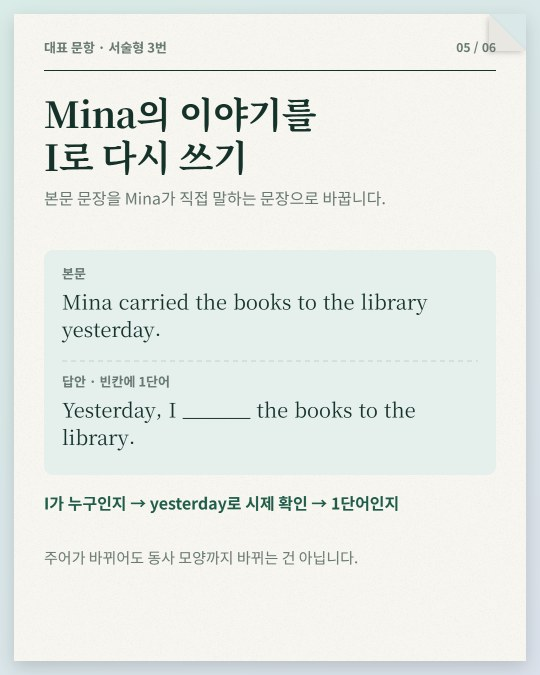
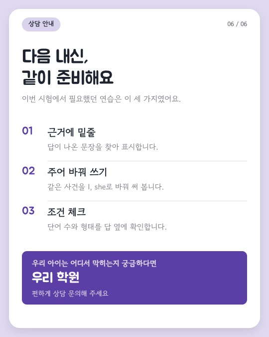

영어 내신 시험지를 AI가 읽고, 키트가 숫자와 말투를 점검하고, 우리 학원 디자인으로 카드를 만듭니다.
무료입니다. 설치 없이 ChatGPT나 Claude 채팅만 있으면 시작할 수 있어요.
시험 때마다 들어오는 시험지가 블로그와 인스타그램에 올릴 가장 좋은 재료입니다.
배점 구조, 출제 특징, 대표 문항 해설, 상담 안내까지. 제목과 본문을 복사해 붙여 넣으면 됩니다.
1080×1350 세로 6장. 학원 색, 글꼴, 로고로 바꾸고 PNG로 저장합니다.
학교, 학년, 지역 해시태그까지 붙은 인스타 캡션을 함께 만듭니다.
처음에는 웹에서 시작하고, 자주 쓰게 되면 자동으로 바꿔도 됩니다.
필요한 것: ChatGPT 또는 Claude 채팅
필요한 것: Claude 유료 플랜(Pro 이상), Claude 앱, Node.js
스타일 8가지, 글꼴 10가지, 원하는 색과 로고. 같은 글로 6장이 한 번에 바뀝니다.



AI는 시험지를 읽고 글을 씁니다. 사실 확인과 말투 검사는 키트가 합니다.
같은 시험지, 다른 글
| AI에게 그냥 맡긴 글 | 키트로 만든 글 |
|---|---|
| 이번 시험의 특징을 자세히 살펴보겠습니다. | 이번 시험은 서술형 5문항이 40점이었습니다. |
| 꼼꼼한 대비가 필수적입니다. | 서술형 한 문항이 8점이라, 하나를 놓치면 선택형 하나보다 2점을 더 잃습니다. |
| 체계적인 커리큘럼으로 완벽하게 대비합니다. | 우리 아이가 어느 단계에서 막히는지 궁금하시다면 우리 학원에서 함께 확인해 보세요. |
스튜디오는 모든 작업을 원장님 브라우저 안에서 합니다. 시험지는 원장님이 쓰는 AI 채팅에만 첨부됩니다.
키트와 스튜디오는 무료입니다. 웹 방식은 ChatGPT·Claude 채팅(무료 또는 유료)만 있으면 됩니다. Claude Code 방식은 Claude 유료 플랜이 필요합니다.
중·고등학교 영어 내신 시험지 PDF나 사진이면 됩니다. 이름과 번호가 적혀 있으면 가리고 넣어 주세요. 글자가 흐린 부분은 '판독 불확실'로 표시되고 글에는 쓰지 않습니다.
공식 정답이 없기 때문에 글에 정답을 쓰지 않습니다. 대표 문항은 무엇을 보고 어떤 순서로 판단하는지만 설명합니다.
시험지 전체를 이미지로 올리지 않는 것을 권합니다. 키트는 대표 문항의 한두 문장만 발췌합니다.
연습용 가상 시험지를 내려받아 웹 방식으로 해 보세요. 스튜디오의 '예제 열기'로 결과 모습을 먼저 볼 수도 있습니다.